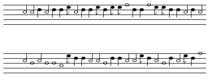

| To see how the third (and by far the most interesting) kind of scaling noise differs from the other two, we use the power spectrum. |
| For white noise the power is unrelated to the frequency, so we say this noise has a 1/f0 distribution. |
| (Since f0 is a constant, this is just another way of saying the power is independent of the frequency.) |
| On the other hand, Brownian noise exhibits a 1/f2 power spectrum. |
| This is not obvious, but very roughly it works like this: to get a very high frequency note we would have to see a lot of successive increases in pitch, and this is very unlikely (though not impossible) since the changes in tone are determined randomly, allowing decreases as well as inceases. |
| A third type of scaling noise is called 1/f noise, and its power spectrum has a 1/f shape. |
| This type of noise occurs in many, many natural situations. |
| Playing 1/f noise produces some interesting results: it is not so random as white noise, and not so predictable as Brownian noise, but has some elements of both. |
|  |
| Listen: |
| Thanks to Harlan Brothers for the midi files of these tunes. |
Return to 1/f aspects of music.